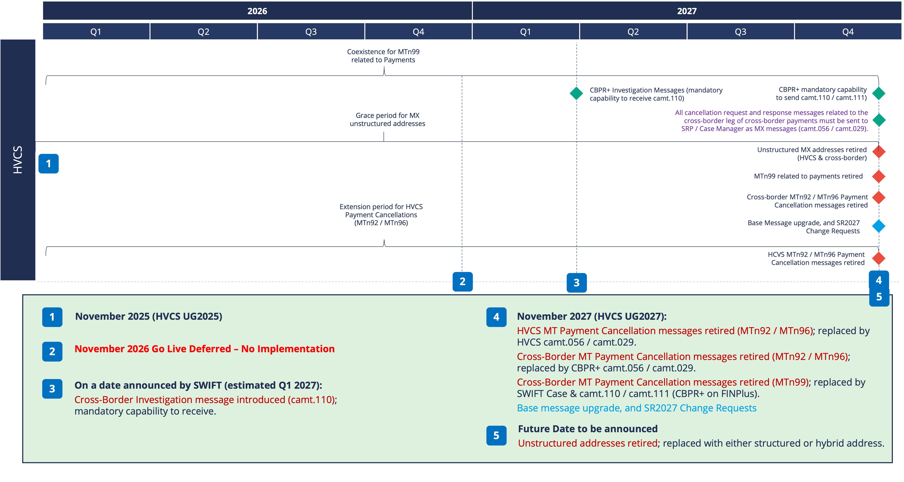

Document purpose and overview
This document, the Co-Existence Procedures (Part F) is one part of a suite of documentation to help participants understand what is required to become a high value clearing system (HVCS) participant and how to send and receive individual HVCS instructions and NZD HVCS payments that the participant cannot revoke or reverse after settlement.
This document should be read in conjunction with the Payments NZ Rules (in particular, Part 9). Part 9 contains the HVCS clearing and settlement rules which specify the requirements for participants to create, exchange, settle, deliver and receive HVCS instructions and make HVCS payments (including SCPs) through HVCS. Part 2 contains the access and participation rules for an entity to join HVCS.
In addition to the Rules, the applicable HVCS standards (Appendix 14) which specify how participants comply with Part 9 are comprised of:
- Part A — HVCS Overview
- Provides a high-level overview of the HVCS community, message types, how HVCS clearing and settlement works, and the business, technical, and regulatory environment in which the process operates. This is a non-binding document for use as guidance only.
- Part B — HVCS Common Procedures
- Provides binding procedures and product requirements that apply to all HVCS instructions at all times. This document also contains some non-binding commentary and best practice.
- Part C — SCP Procedures
- Provides binding procedures and product requirements that apply only to an HVCS instruction that is a same day cleared payment. This document also contains some non-binding commentary and best practice, such as recommended terms and conditions with customers.
- Part D — MX Messaging Procedures
- Provides binding procedures on how to send and receive MX messages (ie, NZ HVCS ISO 20022 messages) across the HVCS MX CUG. This document also contains some non-binding commentary and best practice.
- Part E — MT Messaging Procedures
- Provides binding procedures on how to send and receive MT messages (ie, NZ HVCS ISO 15022 messages) across the HVCS MT CUG. This document also contains some non-binding commentary and best practice.
- Part F — Co-existence Procedures (this document)
- Provides binding procedures for participants during the co-existence phase of the migration from sending and receiving MT messages to MX messages.
For information on how to determine whether the content of an applicable HVCS standard in Appendix 14 creates binding legal rights or obligations, please see Part A - Overview.
Notwithstanding anything in clause 1.8 of the Rules or in Part A — Overview, any reference to actions a person "should" take or anything a person "should" do is intended to convey a best practice with which a person should comply with only, but which has no legal effect.
- This document discusses the obligations that apply to participants during the co-existence period.
- This document is divided into five chapters.
- Chapter 1 provides defined terms, an overview of the HVCS instructions that are in scope during co-existence, the migration timeline and the obligations to send and receive HVCS instructions that apply to participants.
- Chapter 2 provides information on how to join the MX CUG and specifies the types of BICs that can be used.
- Chapter 3 provides an overview on the New Zealand HVCS's approach to structured data during co-existence, and the approach of CBPR+.
- Chapter 4 provides an overview on data truncation.
- Chapter 5 has been deleted.
- Chapter 6 has been deleted.
- Chapter 7 provides a temporary right for participants to receive and process MT payment messages for 4 weeks from the beginning of the co-existence phase.
Removed reference to intermediaries (forwarding data paragraphs removed from chapter 4).
Chapter 1: The journey from MT to MX
- This chapter gives an overview of:
- the HVCS instructions (MT and MX messages) that are in scope during the co-existence phase,
- the timeline for migrating HVCS instructions as an MT message to an MX message,
- the obligations for participants to send and receive HVCS instructions in accordance with the applicable message standards,
- dates and times when Standards are introduced and revoked.
Changed to 'applicable message standards'.
Changed:
From: MX messaging will go live.
To: when Standards are introduced and revoked.
Revised for second coexistence phase November 2025 to November 2026.
Co-existence phase means the period determined by Payments NZ in which the MT Messaging Procedures, the MX Messaging Procedures, the MX Message Specifications and these Co-existence Procedures all apply simultaneously beginning on 22 November 2025 and ending on a date:
- in November 2026; or
- as determined by Payments NZ if all participants have fully migrated to using MX messages prior to November 2026.
On-send means when a participant, in its capacity as an intermediary:
- receives an MX message from another participant destined for a third party recipient and sends that message as a CBPR+ message to that recipient;
- receives an MT message from another participant destined for a third party recipient and sends that message as a CBPR+ message or a FIN message to that recipient;
- receives a CBPR+ message destined for another participant and sends that message as an MX message to that participant; or
- receives a FIN message destined for another participant and sends that message as an HVCS instruction to that participant.
Removed 'subject to clause 1.7(7)(a)(iv)of these Co-existence Procedures' - superfluous
Send means when an instructing agent delivers an HVCS instruction to an instructed agent, being either:
- a payment message; or
- an exception and investigation message.
Structured Postal Address formatting means when the content of the address information within an MX message is formatted in accordance with the structured data requirements set out in the MX Message Specifications.
Unstructured Address Line formatting means when the content of the address information within an MX message is not formatted in accordance with the structured data requirements set out in the MX Message Specifications.
Added Hybrid Address Line formatting.
Hybrid Address Line formatting means when the content of the address information within an MX message is formatted in accordance with the hybrid data requirements set out in the MX Message Specifications.
Unless the context otherwise specifies, all other defined terms have the meanings given to them in Part 19 of the Payments NZ Rules and the HVCS Common Procedures.
- The payment messages described below are in scope during the co-existence phase.
- This table identifies new obligations that participants need to comply with in relation to MX messages.
Removed:
Participants will still be required to comply with all existing obligations in relation to receiving and processing MT messages until the end of the co-existence phase (currently scheduled for November 2025).
Messages exchanged between SWIFT message transfer service and participants:
New content
| MX message | NZ HVCS timing | CBPR+ timing |
|---|---|---|
|
pacs.008
pacs.009 CORE
pacs.009 COV
pacs.004
camt.056
camt.029
|
By the beginning of the co-existence phase: Participants must be able to receive and process MX messages that use
hybrid postal address formatting.
By the end of the co-existence phase: Participants must send all messages using either structured postal
address formatting or hybrid postal address formatting.
|
By the beginning of the co-existence phase: Participants acting as intermediaries must be able to receive and process
CBPR+ messages that use hybrid postal address formatting.
Removed 'subject to clause 1.7(7)(a)(iv)' - superfluous Participants acting as intermediaries must be able to on-send a CBPR+ message
that uses hybrid postal address formatting to participants as an MX message.
By the end of the co-existence phase: Participants acting as intermediaries must send all CBPR+ messages and on-send
all CBPR+ messages to participants as an MX message using either structured
postal address formatting or hybrid postal address formatting.
|
Removed:
Messages exchanged between SWIFT message transfer service and HVCS (RBNZ)
Messages exchanged between SWIFT and participants
Renamed:
From: Cash management message scope
Revised coexistence requirements per SWIFT's latest requirements.
The following investigation messages are in scope during the co-existence phase:
| MT message | MX message | NZ HVCS timing | CBPR+ timing |
|---|---|---|---|
| MT 192 / 292 - Request for Cancellation | camt.056 - FI to FI Cancellation Request |
By the beginning of the co-existence phase: Participants must be able to receive from SWIFT as an MX message and process By the end of the co-existence phase: Participants must send all requests as an MX message. |
By the beginning of the co-existence phase: Participants acting as intermediaries must accept CBPR+ camt.056 messages. MX->MT and MT->MX translation will be available via SWIFT's Inflow Translation. By the end of the co-existence phase: Participants must send all requests to SWIFT's Case Manager BIC. |
| MT 196 / 296 - Answers | camt.029 - Resolution of Investigation |
By the beginning of the co-existence phase: Participants must be able to receive from SWIFT as an MX message and process
By the end of the co-existence phase: Participants must send all responses as an MX message. |
By the beginning of the co-existence phase: Participants acting as intermediaries must accept CBPR+ camt.029. MX->MT and MT->MX
translation will be available via SWIFT's In-Flow Translation.
By the end of the co-existence phase: Participants must send all responses to SWIFT's Case Manager BIC.
|
| MT 199 / MT 299 - Investigation Request and Response | camt.110 / camt.111 - Investigation Request and Response |
No decision has been taken in relation to use of camt.110/camt.111 for domestic payments. Payments NZ will lead assessment of Case Manager capabilities for domestic
payments when SWIFT make this capability available for testing.
|
By the end of the co-existence phase: Participants must be able to receive from SWIFT and process as an MX message
|
Revised timing, replaced diagram.
A phased adoption of MX Messaging Procedures will begin on 22 November 2025.

- The AVP MT CUG will continue to exist through the co-existence phase alongside the AVP MX CUG.
- From 22 November 2025, during the co-existence phase, participants must:
- Be a member of the AVP MX CUG; and
- Be a member of the AVP MT CUG until the end of the co-existence phase.
Reworded
Add option to terminate MT CUG earlier.
Revised requirements.
- The approach established for the New Zealand migration places obligations on participants in relation to sending and receiving MX messages.
- The following obligations in sub-paragraphs (3) to (7) apply to participants during the co-existence phase.
- Sending payment messages:
- Participants must send payment messages to other participants using an MX message as follows:
- Customer Credit Transfer using a pacs.008;
- Financial Institution Credit Transfer using a pacs.009;
- Financial Institution Credit Transfer Cover using a pacs.009 COV;
- A return message using a pacs.004.
- Where a participant sends a payment message as an MX message, the participant must :
- Send an address that contains either Unstructured Address Line formatting or Structured Postal Address formatting or Hybrid Postal Address formatting.
- Sending exception and investigation messages: Participants must send exception and investigation messages to other participants using either an MX message or an MT message including:
- Request for Cancellation message using either a camt.056 or MT192 / MT292; and
- Resolution of Investigation message using either a camt.029 or MT196 / MT296.
- Receiving and processing payment messages:
- Participants must receive and process the following MX payment messages from other participants:
- pacs.004 — Payment Return;
- pacs.008 — FI to FI Customer Credit Transfer;
- pacs.009 — Financial Institution Credit Transfer; and
- pacs.009 COV — Financial Institution Credit Transfer Cover.
- Participants must receive and process MX messages that contain:
- Structured Postal Address formatting; and
- Unstructured Address Line formatting; and
- Hybrid Address Line formatting.
- Return messages: If returning an HVCS payment, participants must return the HVCS payment by sending a return message to the original instructing agent as follows:
- if the original instructed agent receives a pacs.008 message, return by sending a pacs.004 message;
- if the original instructed agent receives a pacs.009 message, return by sending a pacs.004 message;
- if the original instructed agent receives a pacs.009 COV message, return by sending a pacs.004 message;
- Receiving and processing other messages
- Participants must receive and process the following MX messages:
- camt.056 — Request for Cancellation;
- camt.029 — Resolution of Investigation;
- xsys.002 — Authorisation Notification; and
- xsys.003 — Refusal Notification.
- Participants must receive and process MT messages including:
- MT 192/ MT 292;
- MT 196 / MT 296; and
- MT 019.
- Participants that act as intermediaries
- For SWIFT messages that accompany a payment received in CBPR+ format destined for another participant, participants that are acting as intermediaries must on-send the CBPR+ messages to the instructed agent using a payment message as follows:
- a pacs.008 SWIFT message received in CBPR+ format must be on-sent as a pacs.008 payment message;
- a pacs.009 SWIFT message received in CBPR+ format must be on-sent as a pacs.009 payment message;
- a pacs.009 COV SWIFT message received in CBPR+ format must be on-sent as a pacs.009 COV payment message; and
- a pacs.004 SWIFT message received in CBPR+ format must be on-sent as a pacs.004 return message
- For SWIFT messages that do not accompany a payment destined for another participant, participants acting as an intermediary must:
- upon receiving a Request for Cancellation SWIFT message in any format, on-send either a camt.056 or a MTn92 Request for Cancellation message to the instructed agent; and
- upon receiving a Resolution of Investigation SWIFT message in any format, on-send as either a camt.029 or a MT196 / MT296 Resolution of Investigation message to the instructed agent.
- Participants acting as intermediaries should:
- be able to receive and process CBPR+ messages (either MX or MX with embedded MT); and
- for MX payment messages received from another participant destined for a correspondent banking partner, on-send these as a CBPR+ message in accordance with SWIFT guidelines.
- Participants that offer specific services to customers
- Participants that receive MX pain messages from their customers destined for another HVCS participant must create an MX payment message for that instruction;
- Participants that receive an HVCS instruction from their customers as an MT message or other non-MX message format destined for another HVCS participant must use an MX message.
MT 012 Sender Notification is an optional feature in the FINCopy service - no longer used. Removed.
MT 019 Abort Notification - notifies the sender that the system has been unable to deliver the message specified. Could still apply to E&I. Retained.
Retained 'must' though qualified send requirements as limited to HVCS participants.
Revised to use MX
- From the scheduled date for the mandated use of MX messaging (the end of the co-existence phase), all participants will be required to:
- send, receive and process HVCS instructions in accordance with the MX Messaging Procedures and MX Message Specifications for all message types that are in scope;
- send HVCS instructions containing Structured Postal Address formatting or Hybrid Postal Address formatting only; and
- send and receive structured data for CBPR+ and HVCS instructions.
- The ability to send or receive MTn92 and MTn96 MTn99 messages will be retired in November 2026.
- The ability to send or receive MTn99 messages related to payments will be retired in November 2027.
- There is no foreseen retirement date for MTn98 messages.
Revised to MX only.
- This section is only relevant to CLS members.
- All CLS pay-in and pay-out messages must be sent as an MX message.
Chapter 2: Dual CUGs
What is the replacement for the RBNZ Confluence website?
Information on how to prepare for the AVP MX CUG and the process to join the CUG is provided by the RBNZ Confluence website.
Clarification on the process to retire the AVP MT CUG will be developed with participants during the co-existence phase.
- SWIFT requires participants to use a mix of Production and Test BICs throughout the co-existence phase:
- Production BICS must be used to send and receive MX messages; and
- Test BICS must be used to send and receive MT messages across the Test CUG.
- see the table at clause 2.4 of these Co-existence Procedures to see where Production and Test BICs should be used.
- The following table describes the capabilities and functionality of the AVP MT CUG and AVP MX CUG provided by SWIFT and RBNZ.
Removed reference to the MT CUG.
| 1 | 2 | 3 | 4 |
|---|---|---|---|
|
MT Block 1, 2
MX InterAct Headers Sender
Receiver
Instructing Agent
Instructed Agent
|
MT Block 4
MX BAH / Business Document Debtor Agent
Creditor Agent
Intermediaries
|
||
| Production BIC | Production BIC | ||
| SWIFT |
FINplus
Test CUG |
✓ | ✓ |
| RBNZ |
AVP MX
Test CUG |
✓ | ✓ |
Removed text related to mixed message scenarios for investigation messages, and the picture has been removed (to be deleted: 'images/hvcs_coexistence_bic_translation.png'
Removed MT references
- MX test services require a log in to a SWIFT production environment and use a published BIC8. The traditional addressing safeguards employed within MT messaging have been replaced with the Distinguished Name (DN) specified in the Interact Header to address messages to the participant's correct test environment. This means that both test and production messages contain a live BIC and there is greater potential for messages to be directed into the wrong environment.
- Participants must ensure that their processes and systems have sufficient protections to ensure test messages using live BICs do not escape into production, particularly when making technical changes, such as routing changes.
- The BIC is combined with the Service Name in the SWIFTNet Header (Network Header) of an InterAct message, to ensure correct addressing and separation of test and production traffic.
Chapter 3: Structured data
- The move to structured data in MX messages will remove ambiguity around the meaning of the information contained in HVCS instructions resulting in better quality data for screening and identifying customer behaviour. This should lead to improved fraud detection, and richer remittance, name and address information.
- Domestically, it is recommended that participants review their processes relating to obtaining customer data and acquire any additional customer data needed to ensure all ISO 20022 schema elements needed to provide structured or hybrid name and address information are captured.
- The following list outlines the agreed approach to use of structured data within HVCS instructions (across remittance, name and address elements) for New Zealand's HVCS:
- During the co-existence phase:
- Participants must be able to receive and process MX messages that contain Unstructured Address Line formatting.
- Sending MX messages containing Structured Postal Address formatting is recommended.
- From the scheduled date of mandated use of MX structured or hybrid messaging (the end of the co-existence phase), the capability to send MX messages containing Unstructured Address Line formatting will be removed from the MX specification; therefore, participants must be able to send and receive MX messages containing Structured Postal Address formatting or Hybrid Postal Address formatting for HVCS instructions.
- Further clarification and guidelines for the use of structured remittance and structured name and address is provided in Part D — MX Messaging Procedures.
Added reference to hybrid
Added reference to hybrid
- The following outlines the agreed approach to structured data for CBPR+:
- During the co-existence phase, if a payment instruction is initiated by the debtor agent using a CBPR+ message, it is highly recommended that the CBPR+ message uses Structured Postal Address formatting for the debtor and creditor.
- At the end of the co-existence phase, the capability to send CBPR+ messages containing Unstructured Address formatting will be removed from the CBPR+ Usage Guidelines. Therefore, by the end of the co-existence phase, all participants that act as intermediaries must be able to send and receive CBPR+ messages containing wither Structured Postal Address formatting or Hybrid Postal Address formatting.
Removed reference to MT
Renamed Chapter 4: Forwarding data
Chapter 4: Using an MT Payments Processor
- If a participant needs to map MX messages to an MT message for their back office systems then they should be aware that truncation can occur and should refer to the PMPG guidelines for basic principles for mapping, prioritisation of elements and translation. SWIFT also provides translator and/or mapping libraries to define, map and validate HVCS instructions to and from any format including MX messages and MT messages.
- There are two scenarios where truncation can occur when receiving a CBPR+ message with embedded MT message:
- a CBPR+ message that has gone through in-flow translation,
- a CBPR+ message that has gone through the Transaction Manager (The Transaction Manager scope is limited to cross border payments sent via the FINplus CUG).
- For MT messages that have been translated in-flow or in the Transaction Manager, SWIFT provides the delivery format “ISO 20022 with embedded MT”, this includes an indication of whether truncation has occurred and provides additional details of the truncation(s).
Chapter 5: Transaction Manager
Chapter 6: Testing required during co-existence
Chapter 7 is new for this coexistence period
Chapter 7: Receipt of MT payment messages during co-existence
It is possible that some MT payment messages which were sent before 22 November 2025 may be received by participants for a short period on or after 22 November 2025, for example, if an MT payment message took longer than expected to be sent through SWIFT's messaging system.
Payments NZ discussed with the ISO 20022 Industry and Operational Working Group (ORWG) that during the window immediately following go-live, Participants may receive MT payments from SWIFT that were held in a SWIFT outbound sanctions queue at the time of go-live 22 November. These may be any of the MT payment types or their return variants. Some Participants may be able to receive and process the incoming MT payment instruction; some may not and would be forced to reject the payment instruction. If the payment was accepted, and subsequently needed to be returned, it would have to be returned as a pacs.004.
Payments NZ are highlighting the potential to receive these MT instructions though expect volumes will be low to none. Payments NZ to not expect any Participant to build capability to handle this scenario and any occurrences to be handled manually via operations teams.
This chapter is effective from the beginning of the co-existence phase on 22 November 2025 until the end of the calendar day on 19 December 2025 (Effective Term). This chapter ceases to have any effect on and from 20 December 2025.
This Chapter 7 applies during the Effective Term notwithstanding any provision to the contrary expressed in any Rule or Standard.
-
Participants
may
receive and process the following MT payment messages from other participants for the Effective Term:
- MT103;
- MT202;
- MT202 COV;
- MT205; and
- MT205 COV.
- Return messages: If returning an HVCS payment that was received in MT format during the Effective Term, participants must return the HVCS payment by sending a return message to the original instructing agent as follows:
- if the original instructed agent receives a MT103 message, return by sending a pacs.004 message;
- if the original instructed agent receives a MT202 message, return by sending a pacs.004 message;
- if the original instructed agent receives a MT202 COV message, return by sending a pacs.004 message; and
- if the original instructed agent receives a MT205 message, return by sending a pacs.004 message.
Removed reference to MT